1.2. 线性与二次判别分析¶
线性判别分析(LDA)
(discriminant_analysis.LinearDiscriminantAnalysis) 和二次
判别分析(QDA)
(discriminant_analysis.QuadraticDiscriminantAnalysis) 是两种经典的
分类器, 正如它们名字所说, 分别带有一个线性决策平面和二次决策平面.
这些分类器很吸引人, 因为它们有可以容易计算得到的闭式解, 本质上是多类别分类, 在实践 中已被证明很有效, 以及不用调超参数这些优点.

上图展示了LDA和QDA的决策边界. 底行的两图表明LDA只能学习到线性边界, 而QDA可以学习到 二次边界, 因此使用更加灵活.
Examples:
Linear and Quadratic Discriminant Analysis with confidence ellipsoid: Comparison of LDA and QDA on synthetic data.
1.2.1. 使用LDA来降维¶
discriminant_analysis.LinearDiscriminantAnalysis 可以用来实现有监督的降维,
通过把输入数据投影到一个由多个方向组成的线性子空间, 那些方向可以最大化不同类别之间的
间隔(下面用数学讨论会更精确). 输出的维度必然会比类别的数目小, 因此这是一种较强的降维,
也只有在多分类中讲得通.
discriminant_analysis.LinearDiscriminantAnalysis.transform 是一种实现. 可以用
构造器参数 n_components 设置想要得到的维度. 这个参数对
discriminant_analysis.LinearDiscriminantAnalysis.fit 或者
discriminant_analysis.LinearDiscriminantAnalysis.predict 没有影响.
Examples:
Comparison of LDA and PCA 2D projection of Iris dataset: Comparison of LDA and PCA for dimensionality reduction of the Iris dataset
1.2.2. LDA和QDA分类器的数学表达¶
LDA和QDA都可以从简单的概率模型中推到得到, 概率模型可以对每一类别  的类条件分布 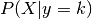 分别建模.
预测结果则可以通过贝叶斯法则来获得:
的类条件分布 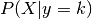 分别建模.
预测结果则可以通过贝叶斯法则来获得:
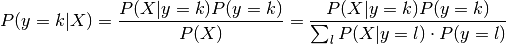
我们选择可以最大化这个条件概率的类别 .
更具体地说, 对于线性和二次判别分析, 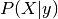 为多变量的高斯分布, 分布密度为:
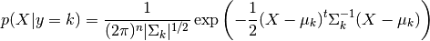
为了把这个模型当作分类器使用, 我们只需要从训练数据中估计类先验概率 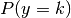
(用类别 的实例比例), 类别均值 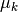 (用经验的样本类别均值)
和协方差矩阵(通过用经验的样本类别协方差或者正则化的估计器estimator: 见下面的
shrinkage章节).
对于LDA,假设每个类别的高斯分布共享相同的协方差矩阵: 对于所有 , 有 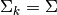 . 这可以带来线性的
决策平面, 正如所见, 通过比较log似然比 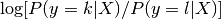:
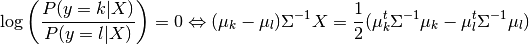
对于QDA, 高斯分布的协方差矩阵 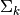 则没有上述假设, 因此带来二次决策平面. 更多细节见 [3] .
Note
Relation with Gaussian Naive Bayes
If in the QDA model one assumes that the covariance matrices are diagonal,
then this means that we assume the classes are conditionally independent,
and the resulting classifier is equivalent to the Gaussian Naive Bayes
classifier naive_bayes.GaussianNB.
1.2.3. LDA降维的数学表达¶
为了理解LDA在降维中的使用, 从上文介绍的LDA分类法则的几何推导讲起会比较有效.
我们定义目标类别的总数目为  . 由于在LDA中我们假设所有的类别拥有相同的估计协方差
. 由于在LDA中我们假设所有的类别拥有相同的估计协方差  ,
我们可以重新缩放调整数据, 使得协方差矩阵是恒等的:
,
我们可以重新缩放调整数据, 使得协方差矩阵是恒等的:
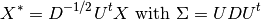
因而可以看到, 对于一个调整后的数据点进行分类, 等同于计算估计类别均值 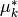 ,这个均值在欧式距离上最接近数据点. 但这也可以在数据投影到 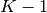 个由所有类别的所有 生成的仿射子空间 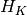 之后完成. 这表明在 LDA分类器中, 隐含着通过线性投影在一个 维度的空间实现降维.
我们可以降低更多的维度到指定的  , 通过投影到可以最大化投影后的 的方差的线性子空间 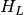
(事实上, 我们正在对转换后的类别均值 进行一种形式的PCA). 这个 对应于
, 通过投影到可以最大化投影后的 的方差的线性子空间 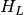
(事实上, 我们正在对转换后的类别均值 进行一种形式的PCA). 这个 对应于
discriminant_analysis.LinearDiscriminantAnalysis.transform 方法中的 n_components . 更多细节见 [3] .
1.2.4. 缩减(Shrinkage)¶
缩减(Shrinkage)是一个改善估计协方差矩阵的工具, 用在当训练样本数小于特征书目的
情况下. 因为在这种场景中, 根据经验来估计样本的协方差十分糟糕. Shrinkage LDA可以
通过设置 discriminant_analysis.LinearDiscriminantAnalysis 类的参数
shrinkage 为 ‘auto’. 通过Ledoit 和 Wolf [4] 介绍的引理得到的分析方法,
可以自动决定最优的shrinkage参数. 值得注意的是, 目前shrinkage只在设置 solver
参数为 ‘lsqr’ 或者 ‘eigen’ 时起作用.
shrinkage 参数可以手动设置为0和1之间的取值. 特别地, 0的取值对应于没有shrinkage
(这意味着将使用有经验得到的协方差矩阵), 1的取值对应于完全shrinkage
(这意味着将会使用对角的方差矩阵来估计协方差矩).设置这个参数为0和1之间的取值时,
会得到一个协方差矩阵的shrunk版本的估计.

1.2.5. 估计算法¶
默认的解决方法是’svd. 它可以进行分类(classification)和转换(transform), 并且不依赖于协方差矩阵的计算. 这对于当特征的数目很大时是个优点. 然而, ‘svd’不能使用shrinkage.
‘lsqr’ 算法是一种只用在分类中的有效算法, 它支持shrinkage.
‘eigen’ 算法基于类间离散度到类内离散率的优化, 它可以用来分类和转换, 同时支持shrinkage. 但是, ‘eigen’算法需要计算协方差矩阵, 因此它可能不适合于拥有大量特征的情形.
Examples:
Normal and Shrinkage Linear Discriminant Analysis for classification: Comparison of LDA classifiers with and without shrinkage.